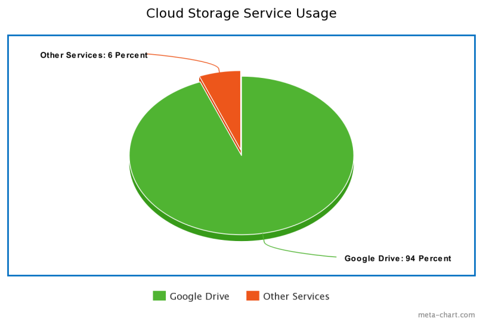
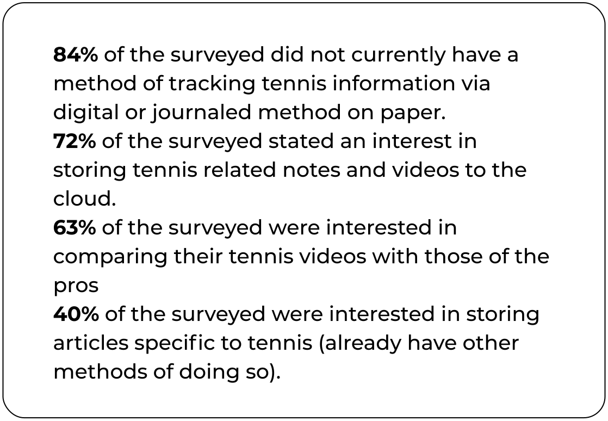
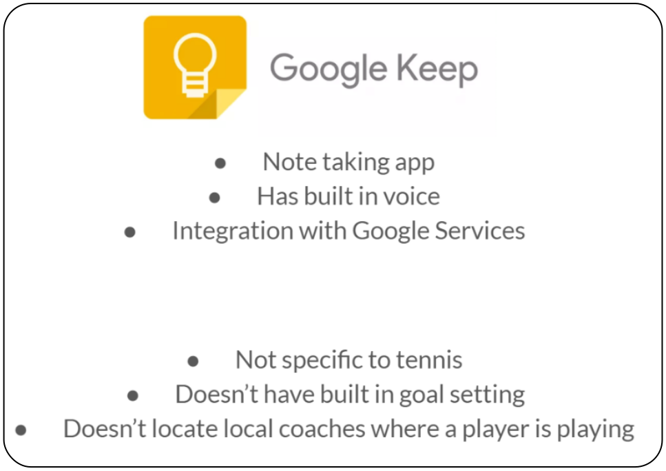

Initially I decided to work with what I know. In my current job, I work with teachers
who have a wide range of needs. I began the process by surveying teachers and tennis
players about their cloud storage habits and needs. Teaching, and teaching tennis are two
subjects that I know a lot about being a former Director of Tennis and a current Technology
Coach working with k-12 teachers. I decided to survey these two areas to work with what I know.
A majority (94%) of the surveyed use Google drive as it is what has been provided to
them by their school district or work environment. Knowing that teachers use cloud
storage was the foundation, but I needed to drill down deeper to see what needs they
may have that could be met by a new solution in the market. The survey data
identified some areas that would need to be addressed; organization methods and
search ease.

At this point I had quality data, but not enough to narrow down the focus of my
application design. I designed two user personas based on the demographic data
provided through the survey and brainstormed with my team lead.
In our conversation we agreed that I seemed more passionate about the Tennis
player and teacher demographic but needed data to confirm that instinct. I had
an inlking of where this data would go but wanted to back it up with solid info
so I developed another 5 question survey.
In this second survey I was able to identify that there was in fact a need that
was not being met for tennis players and coaches.

My instinct seemed to be correct as a need was identified and an interest was
shown in a potential note taking app geared specifically towards tennis players.
Upon refocusing on a tennis goal and note taking app I did a quick competitive
analysis taking a peek at Google Keep to see what the competition was doing in
the realm of note taking and where there are areas for entrance into the market I
also delved deeper into the user personas to identify the two major users for this
app, tennis players and coaches.
